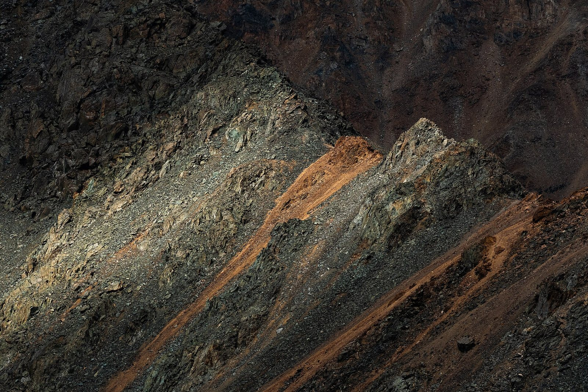

Куда поехать летом по России
Карелия: озёра и северная природа Лето — лучшее время для поездки в Карелию: белые ночи, прохлада и доступ ко всем природным локациям. База — Петрозаводск или…
Путешествия по России и миру: куда поехать, как сэкономить на билетах и что взять с собой.

Карелия: озёра и северная природа Лето — лучшее время для поездки в Карелию: белые ночи, прохлада и доступ ко всем природным локациям. База — Петрозаводск или…

Когда покупать Цена билета зависит от срока покупки сильнее, чем от сезона. Для регулярных рейсов по России и ближнему зарубежью оптимально бронировать за 1–3…

Рюкзак и переноска груза Начните с примерки рюкзака: для однодневного похода хватает 20–30 литров, для маршрута с ночёвкой — 50–70 литров. Проверьте поясной…

Отпуск у моря не обязательно стоит как ремонт квартиры. Если сдвинуть даты, выбрать направление с умом и бронировать заранее, уложиться в разумный бюджет…